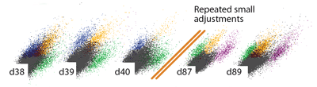
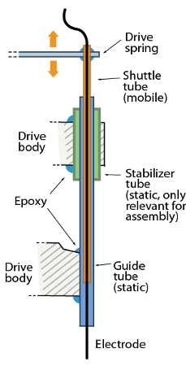
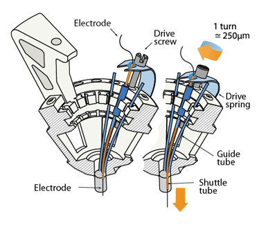
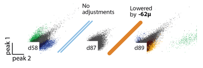

A central constraint on data collection in chronic electrophysiology is the difficulty of recording the activity of identified, individual neurons (termed ‘units’). Most chronic drive designs address this constraint by allowing experimenters to reposition individual electrodes throughout the lifetime of the implant. By repeatedly lowering individual electrodes out of the zone of glial scarring and tissue degeneration, recording conditions sufficient for recording of individual units can be maintained for >100 days.

To enable the precise positioning and re-positioning of electrodes in the awake mouse brain, we use a simplified mechanism in which a single spring and one screw per electrode form the adjustment mechanism.

The drive mechanism is made from two principal parts: The static guide tubes that define the spatial pattern of electrodes, and the mobile shuttle tubes that move within the guide tubes. The tubes are made from pieces of polyimide tubing.
Each electrode (or electrode bundle) is inserted through a shuttle tube and glued at the top so it moves through the guide tube when the shuttle tube is lowered in its guide tube.

The linear motion that drives the electrodes is provided by the 16 arms of a single steel spring that are each held down by an adjustment screw. Each shuttle tube is attached to one of the arms of the spring. By turning the screw, the spring arm is either pressed down or released, which translates to a linear motion of the shuttle tube within the guide tube, moving the electrode in the brain. Each full turn of a screw corresponds to ~250μm in electrode motion.
The tension and lateral stability of the spring arm ensures that there is no sideways
travel or twisting of the shuttle tube when the screw is adjusted, and allows the electrode to
be moved smoothly both up and downwards. By adjusting the drive screws in small
increments, fine grained control over electrode depth is possible. In practice, we found that
quarter turns (~62μm) are a useful step size that can be used to recover recording quality
on electrodes that have lost the ability to resolve units due to tissue degeneration.

This step size is larger than the minimal movement required for recovering units but is easy to achieve by manual adjustment
By making it possible to individually adjust electrode depth, this design facilitates the
targeting of small target regions, enables significantly higher unit yields over longer time
spans than previously possible, and enables highly parallel recordings in awake, behaving
mice.